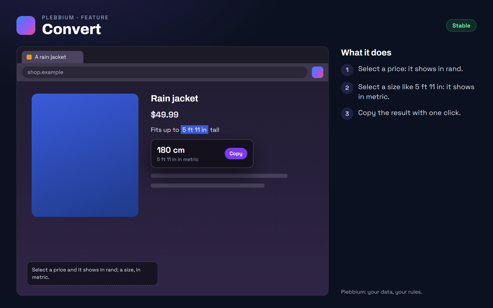

All features › Shipped › Convert
Convert
Stablesince 3604Select a price like $49.99 or a size like 5 ft 11 in, and a small bubble shows it in rand or metric, with Copy.

How to use it
- Select a price or a measurement on any page.
- Read the bubble; Copy puts the converted value on the clipboard.
- Turn it off: Plebbium settings › Highlights & Convert.
When it arrived
156.0.8078.360418 Oct 2026 · Beta and Stable
Convert.
Why it works this way
Right where you read
Shopping or reading abroad, you shouldn't need another tab to know what something costs or measures.
A page asks only for itself
A page can only ask for a conversion for its own tab.